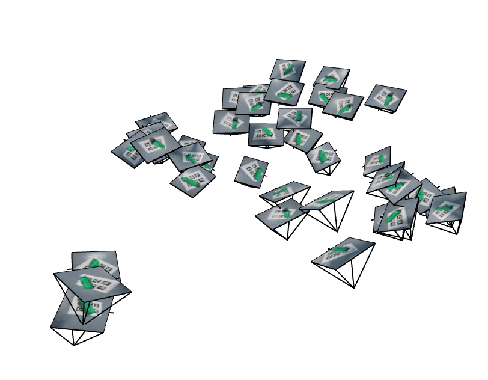
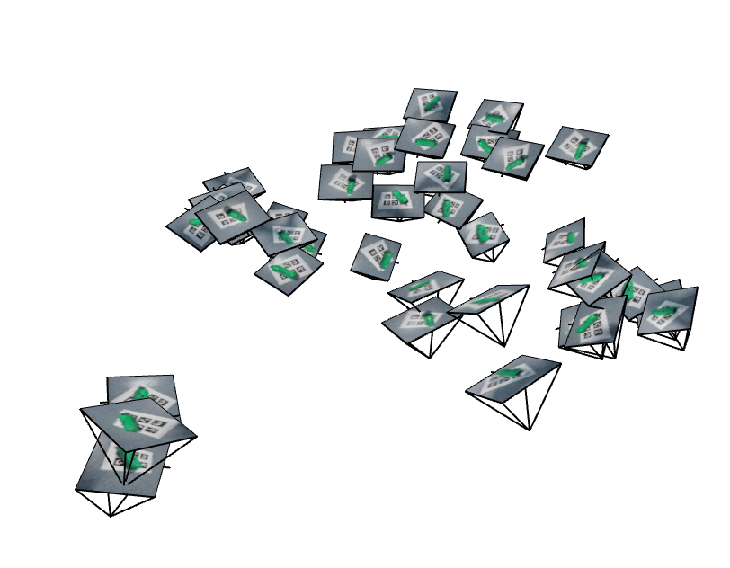
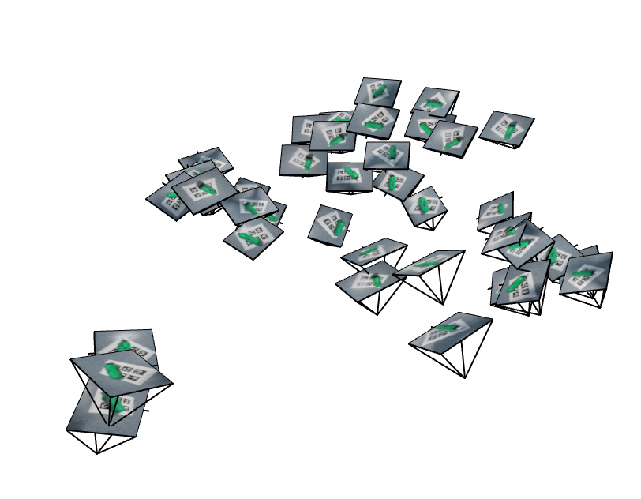
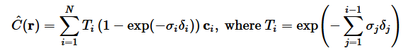
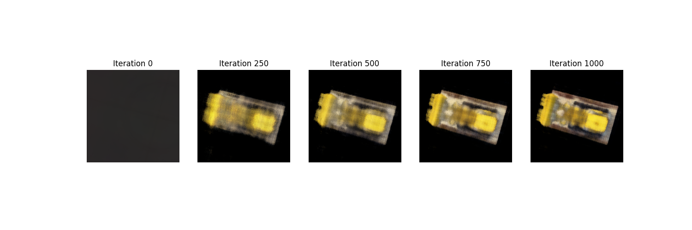
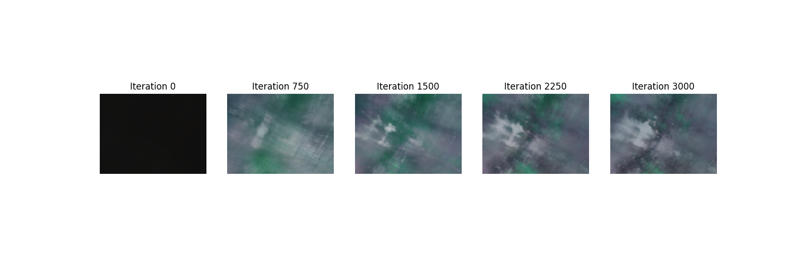

In this part, we calibrated our phone cameras using Aruco tags to get the intrinsic matrix and distortion coefficients. We then used the calibrated cameras to capture a bunch of images of an object from different angles.

We fit an MLP-based neural field to 2D images using sinusoidal positional encoding, random pixel sampling, and MSE loss with Adam (lr = 1e-2). Additionally, I used 3 hidden layers, and a width of 256. Below are the progression results, PSNR curves, and hyperparameter comparisons.

Final reconstructions for: L = 2 vs L = 10, and width = 32 vs width = 256.
The top row (L = 2) shows blurry results, while the bottom row (L = 10) captures more details.
Having a low width is less impactful than having a low L, but it still results in blurrier images.
First, we implement a transform function that transforms a point from camera coordinates to the world coordinates using the camera's extrinsic parameters. Then, we implement a pixel_to_camera function that converts pixel coordinates to camera coordinates using the intrinsic parameters.
After that, we implement a pixel_to_ray function that converts pixel coordinates to rays in world coordinates. This function returns both the ray origins and directions. The ray origins are the camera centers, and the ray directions are computed by transforming the pixel coordinates to camera coordinates and then to world coordinates.
We can then sample points along the ray by taking points between two bounds (near and far).
Here is a visualization of how sampling works, w/ 100 rays on the lego dataset:

We implement a NeRF MLP (architecture shown below). Our input is a 3D world coordinate as well as a ray direction. We output both a density and a color, so we can compute the final color of a ray by integrating along the ray later on during volume rendering.

We approximate the volume rendering integral using a discrete sum. The formula is shown below, where c_i is the color at point i, sigma_i is the density at point i, and delta_i is the distance between point i and the next point along the ray.
The validation PSNR goes slightly above 23 (to 23.08) at some point, but then the model overfits a bit and the PSNR drops below 23 at the end of training.

This time, we train a NeRF on our own images. I increased the sample per ray to 64, and kept everything else the same. I also set the near / far parameters to 0.02 and 0.5.
Not great, but can make out the general shape / tags. Unfortunately did not have enough time as I'd have liked to tune hyperparameters, so there is definitely room for improvement.